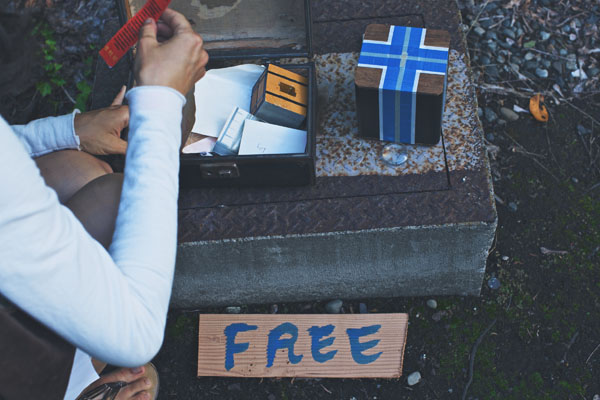
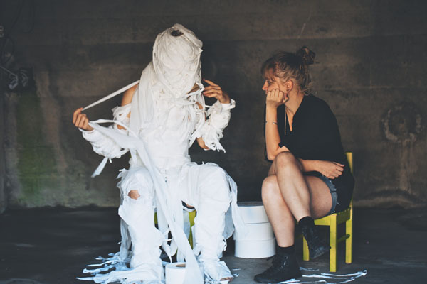

NEPO 5K DON'T RUN 2013. Video by Brad Vanderburg.
It's A Strech was the theme of NEPO 5K DON'T RUN 2013 and we asked two talented photographers - Eric Becker and Kari Champoux - to team up, stretch their legs and cover the numerous projects at NEPO 5k. Enjoy! Banner by Vis-a-Vis Society.
Our awesome MC Joey Veltkamp working the crowd.
It wouldn't be Joey without a rainbow!
Rachel Kessler and Sierra Nelson of Vis-a-Vis Society stretching participant's minds and bodies.
Vis-a-Vis' Rachel Kessler leading the way! Perhaps taking a leap of faith?
For our NEPO style registration Vis-a-Vis Society came up with over 1000 unique travel words to choose from. Pollination, foam, act, tonsil, waltz, fever, fish, knock, tremor, chair, net, license, ice, goose or shark anyone?
"Accessories for the Journey" by Kate Clark and Alexandria Kewitt. Kate and Alexandria created hand-crafted wearable art objects based on observations along the NEPO route. They walked the route many, many times and these wearable pouches were gifts to fellow urban explorers, hoping to inspire an eye and mind keen on noticing the fascinating treasures along the way.
Kate and Alexandria modeling their accessories.
"Voyage without a Tail Wind" an installation in Hing Hay Park by Paul Komada and Nicholas Nyland. Here is a story behind it: The three islands known variously as the Senkaku, Diaoyu, Tiaoyutai or Pinnacle Islands become figures at the center of a longstanding conflict over control among Japan, China, Taiwan, and the United States (each of which has had control of the sites at some point since the 14th century). The island figures are cloaked in dazzle-camouflage of national flag designs that echo the confusing, contentious and often bizarre dispute.
What Zack is hiding behind is a page from "Ledoux Merix", zine by Robert Hardgrave and Jesse LeDoux. In this handmade risograph zine Robert transformed Jesse's drawings into an indescribable medley of imperfection and whimsy. He handed them to the attendees to take home and to serve as a memory of the curiosity experienced during the walk.
Ready, steady, don't run!
Crowd heading up King Street. Feeling electric.
Massive Monkeys gave break dancing and hip hop demos at their Beacon Studio.
A monster pops out of a garbage can..
..
.. and there is a banana involved. It's a "Poetry Reading" by Sarah Galvin, Riley Christiansen, Willie Fitzgerald.
Brandon Aleson and Jesse Montini-Vose waging their many fingers.
Their interactive installation was called
01000100
01001001
01000111
01001001
01010100
01010011[DIGITS]
01000100
01001001
01000111
01001001
01010100
01010011[DIGITS]
The piece consisted of a 5x5 grid of 3D-printed fingers. Each finger pointed straight ahead until a viewer got closer: input from a live person triggered movement, fingers finding the viewer's face and following it. (We think this was the moment in history when technology became utterly human - and started pointing fingers at everyone else) .
It appears that the lucky man in the blue shirt was walking with love.
Kate Larson with her site-specific video installation called "MEMORY PLACE".
What did they see in there? In artist's own words: "a new-age nickelodeon".
But we wouldn't take her word for it. Ask TRASH and BITE next time you see them.
Nobody says don't run more clearly then SPD (Segway Patrol Dance, of course). Thanks to the vigilance of Erin Pike and Flatchestedmama Trefsger we have experienced the number of accidental runners rapidly decline this year. Watch their awesome Segway mating dance video.
Artist Carolyn Law placed seven colored "lenses" along the route in hopes of building a temporary relationship between the viewer and the surrounding landscape. The answer to the rhetorical question within the work's title "Here's a Moment/Do We Look?" is clearly, colorfully yes.
Impostors (Faux Flora) by Nicky Susec.
Via "Salton Seattle" Virginia Wilcox transported NEPO 5k participants to the post-apocalyptic terrain of Southern California's Salton Sea. According to Virginia, the actual landscape of Salton Sea is littered with broken-down furniture, smashed tv's, beer cans, dead fish, and off-brand cigarettes. A stretch of sidewalk in Seattle's International District was also littered with broken-down furniture, smashed tv's, beer cans, dead fish, and off-brand cigarettes. All that and more (did she mention stinky fish?), accompanied by photographic images from Bombay Beach.
All along the route Taylor Pinton performed various acts of ritualistic abolition as part of "Spa Day (Eight Easy Steps to Unburdening Ones Soul)" - an endurance piece that involved "covering herself with various materials as a means of spiritual celebration through physical exertion and humiliation". Materials included earth (featured here), flour, salt, milk, lard, booze, ash, cherries. (Photo by MKNZ Porritt).

THE CARTOGRAPHERS AWAKENING was a performative, collaborative exercise in mapping of a small abandoned trash-hewn urban space. Three women cartographers - Vanessa DeWolf, Lydia Swartz and Christin Call - use their imaginations to observe, imagine and discover the map.
Mapping the fence.
Mimi Allin's HUNGER was a month long project about artist's hunger. There can be a lot written about this intense piece and Mimi has done a great job of recording her experiences and observations - read all about it on her blog.
After a two week long fast Mimi Allin is ready to receive.
Here goes the SPD again.
Chris Burnside installing his sculptural piece on an old billboard on the corner of Kings street and 12th. More great photos here.
Francesca Lohmann's sculpture slumped on the sidewalk in the ID. Reminds us of the big sacs of rice moved to and from warehouses in the area.
Here they are up close.
One of Rumi Koshino's beautiful "Oh Yes! IT'S FREE" sculptures. Rumi is moving out of the area, so she set some of her artwork and possessions along the route for free. We hope this delicate piece found a new home and an appreciative owner.
Let me tell you all about it, Nathaniel Russell is back with another set of awesome "Fliers".
Jess Klein and D.K. Pan planted a tree in a gravel area by the bridge as part of their romantically titled project "Summer Love". We hope it grows.
Another colored point of view: "Here's a Moment/Do We Look?" by Carolyn Law.
"Stiletto Relay Race" enacted by GENDER TENDER (Syniva Whitney, Will Courtney and guests) was an absurd effort of improvised and choreographed performance that involved latex objects, sports drills, profane ballet and a short-sighted relay race that didn't really go anywhere.
Although occasionally it crossed the street from one side of the bridge to the other.
Here is GENDER TENDER again: wearable castle and latex stilettos as a head gear. Are you missing out on this latest fashion trend? Yes, we though so.
Veils (of clouds) lifted and the sun came out just in the nick of time. Another lens by Carolyn Law - as if she predicted the weather.
Just when you think you know what's what (namely what's art and what's daily rubbish), here comes PDL and their signage to a) confuse you and b) make sure you are paying attention. For those who still think that the blue tarp in the distance was a Buster Simpson's socially conscious-installation bringing attention to issues of homelessness, I have to break it you - it was in fact a real human shelter with a museum-style label meant to bring YOUR attention to the way people without homes live. Among us, in the plain site - I would say.
YES VESSEL spelled out with bedsheets under the Jose Rizal Bridge by Adam Boehmer.
Two words as a container for all the YESes why this moment in Seattle, on this planet, in this universe, is such great place to be. (photo by Bruce Clayton Tom)
Hope you are packing your lunch. Another one of the Fliers by Nat Russell.
Down on the curb Droolio by Droolio - a bit more lighthearted piece by PDL.
Turning the corner from the bridge onto the I-90 bike trail is the first station of Object Consequences a collaborative project by Timothy Cross, Casey Keeler and Ephraim Russell. Each artist made an offering of objects, available for the taking. Their hope was that people would take these home and play with them, creating unique sculptural pieces for their own enjoinment. We may never know what people did when they got home, but we certainly saw a few participants wearing Ephraim Russell's fabricated metal NEPO 5k route as a jewelry.
Julia Freeman's "Ve-uws: A Peepshow" explored the awkwardness and beauty of making.
On a circular platform in the park Julia erected a circus-tent-like structure. People were invited to sit down ..
.. and watch a pair of hands making and un-making things in each one of the five windows. Each window had a set of materials. Window #1, for example, had carving tools, beets, pearl tipped pins, vaseline and tweezers.
Here is window #3 with yarn, knitting needles, ink, palette knife, pen gridded paper, spoon and butter. The hands busied themselves with a set of tasks creating "something" out of the raw materials and then reversing their steps and undoing their work. Watching a pair of hands meticulously involved with a task was a beautiful sight - also reminding us that creation is often a very messy process!
There was another aspect of this multifaceted show: as the performers remained anonymous, this piece brought to mind numerous "armies" of invisible workers around the world continuously, repetitively making things for our daily use. From their point of view the difference between making and unmaking is probably minuscule.
As an added layer Julia Freeman collaborated with musician Ben von Wildenhaus. Precariously perched on a stack of wood pallets with his amplifier, chair, and tools, Wildehous performed a westernized brand of Middle Eastern fantasy that was captured on a cassette recorder and then replayed. One man acting as a music factory churning out a live, evolving soundtrack.

Building on her work from last year "Quilted Arches Extension" is a sculpture constructed from salvaged wood by Julia Haack. Her work inspired by Romanesque cathedrals and quilted textiles is silueted nicely by the Seattle cityscape.
More Quilted Arches by Julia Haack.

NEPO 5k participants looking at an installation by Tara Atkinson and Justin Duffus called "My Heart Is A City: Who Belongs In the House on the Hill?" - a series of mini-essays and paintings on velum installed on top of the existing "Equality" sculpture in Daejeon park.

The painting side..
.. and the writing side of Tara's and Justin's installation.
In the park, a performance piece by Erin Elyse Burns and Alwyn O'Brien titled Idle was nothing what it's title suggests.
The artists took turns swinging for the entire duration duration of NEPO 5K (over 5 hours), contrasting the rococo concepts of idle pastime with the physical endurance of the act.
Rest at last! (I bet it felt great after an afternoon of exhausting idleness).
On the other side of the bike path, among a small stand of trees, there were people deliberately twisting and contorting their bodies, seemingly for no good reason. In actuality they were trying to navigate through meadow starts with p's Laser Alarm Agent Training Obstacle Course or MSWPLAATOCC for short.
Crisscrossing lines of monofilament created an "invisible laser" obstacle course through which participants weaved their bodies.
(meadow starts with p is a collaborative group consisting of Andrew Peterson and his two children - leave it up to kids to make grownups bend over backwards!)
(meadow starts with p is a collaborative group consisting of Andrew Peterson and his two children - leave it up to kids to make grownups bend over backwards!)
Almost half way and in dire need of encouragement to keep going? No problem, just ask Nat Evans. His project Music for Encouragement provided a much needed service: upon request participants received a short concert of music of their choosing to help propel them on toward the finish line.
Currently playing "primal" encouragement, but according to the menu, you could also choose: "I'm on a quest", "Slow it down a little", "Mysterious", "Pastoral", "I'm open" or "Drone me, brah".
Taylor Pinton takes another step towards unburdening. Looking at this image we wonder about the word "easy" in the works title "Spa Day (Eight Easy Steps to Unburdening Ones Soul)". (photo by MKNZ Porritt)
Later on, most people witnessed only a few left-overs from Taylor Pinton's performance.
There is no other way but forward - saying equally true in life as it is at NEPO 5k - although a simple piece Reflect by Erin Frost suggested it's sometimes good to take a moment and reflect on what is behind us.
Oh boy, what can we tell you? There could be (and definitely should be) an entire blog written about Wahrsager im Urlaub.
In case your deutch is a bit rusty, we are talking about German Soothsayers on Vacation - of course. This traveling band of oh-so-german! fortunetellers - conceived by the imagination of Kathryn Rathke, Jake Nelson and Barry Wright - alternated between states of work and rest. But don't be mistaken, even if you caught them "working" it wasn't a sure bet that you got your fortune revealed: first they had to find you "worthy of fortunetelling". To determine their worthiness potential clients were subjected to a series of "tests". (above: Betsy Brock examining a potential client)
Have a question about your future? It's all in the cards.
Der Wurst Fragen Wagon - a machine that is a combination barrel organ and sausage grinder, it plays music plays while delivering a mystic message in the sausage.
Aw, dreaming about vacationing: aka partaking in traditional German pursuits such as weightlifting, shooting bow and arrow, reading Der Spiegel, consuming mustard..
.. and guilding cuckoo clocks.
Rodrigo Valenzuela and Anastasia Hill showed a series of videos from The coyote project.
The work was created during their recent trip that originated at Mexico-California border. Traveling northbound in a rented moving truck - which served as their housing, mode of transportation, production and exhibition space - each of the ten works was created in the time, space, and distance between stops, drawing out dialogues within and among the artists, the landscape, and various communities.
Laughing Tracks was a performance by Magdalena Hill in the Daejeon park pagoda.
A group of women stood motionless in a circle while soundtracks of laughter played from several different directions. Upon entering the space the tension become palpable as at any given moment there was a burst of laughter contradicting the emotionless faces of performers.
Just a little past the pagoda was the second Object Consequences station - a collaborative project by Timothy Cross, Casey Keeler and Ephraim Russell.
These were the offerings made by Casey Keeler.
Look I'm Surviving was a performance by Alan Petty and Dakota Gearhart in the fenced in area by the I-90 wall.
The two artists have joined together to play with the barriers of physical space and contrast the human body with the challenges of laying claim to territory with handmade props, improvised movement, and an old stereo..
..creating a very surreal imagery along the way.
Pete Fleming's what unknown depth was a sculptural installation that brought to mind a part of a downed surveillance plane or some kind of abstract machine that happened to land on the lawn.
Drew Miller used a metal lid cover for his site-specific installation Set-Conduct.
One of the highlights of this year's 5k was a construction performance piece by Max Kraushaar titled Occupational Health Psychology (OHP).
For Max OHP was the result of working to the point of exhaustion. He manufactured a large number of faux foam 2x4's and used them to frame a small one-story house..
..which he later deconstructed. See his great animated gifs here.
JD Banke's "the meaning of life is mysterious and infinite, let's talk about it" was a visual metaphor for having an attitude that is positive in nature, but searching for good things in less than ideal situations.
Another piece by PDL, this time attributed to Jack Daws.
Right of the path, in a patch of ivy, Keeara Rhoades and co. performed the first episode of her tele-novela "A Ballad for Cutie Beauty".
For the first time, Cutie Beauty was witnessed outside her trailer, lounging on her lawn chair, reading a comic while also courted with live acoustic ballads.
This was essentially a live film shoot performed as much - if not more - for the cameras as for the passing NEPO audience.
Saya Moriyasu glazed gravel: if you've slowed down enough and looked down you'd have seen Greenbelt (caught, glazed and released) by the park's exit onto 18th ave. s. - a small visual morsel for those paying attention.
And right around the corner, you had another chance to learn about your future (in case you missed the germans).
Generously dispensing wisdom and advice Lindsey Apodaca & Tarrah bravely stepped into the roles of SEATTLE SUPERSPIRITUALS.
The created beautiful handmade cards and all their tools in order to give spiritual readings. Guess what, finding a four leaf clover doesn't mean you will be lucky - you already are lucky because you found it! Lucky were the participants who had their fortune read by SEATTLE SUPERSPIRITUALS!
Double whammy by Nataniel Russel.
Another Carolyn Law's piece pointing out the this is all about an experience.
Experience-colored view.
PDL (Greg Lundgren, Jed Dunkerley and more) were busy this year, besides labeling random objects along the route they also offered an interactive performance called Theatre Hitchhiking.
If perhaps you hopped into one of their cars in hopes of not having to walk the rest of the route, you were in for a disappointment - these guys were going nowhere. The real distance here was covered by driver/passenger scenarios ranging from archetypal long-winded boring storytellers and awkward question-askers to more unfamiliar weirdness. The phrase "you can let me out - right here is fine" was a good one to remember, in case they went to far and/or you needed to end a bad trip.
Hanita Schwartz's performance Almost Sugar was based on her father's WWII story.
As if looking back in time, sand was being continuously poored and spilled out of performers clothing, their bodies animated by music of the bygone era.

On the other side of street from the "sand thieves" a "soldier character" sat on a chair - activating the space between them by a perpetual expectation of the act of trespassing.
A neighborhood lot overgrown and houseless is characterized by what is absent. A couple listening to Ruth Marie Tomlinson's Negative Space - perhaps hearing the sound of wind, which in fact is not a sound inherent in the wind, but a result of what it encounters. In the same way negative space is defined by what it is not. An uprooted tree is no longer a tree, but is described by what it was. Negative space is something of its own . . . but what is it?
By now we hope you see the Con ne ct ions (by Carolyn Law).
Aaron Asis and Keith MacLean created an interactive play piece, as well as a confined standing room space for curious passers-by.
Besides the fun interactive aspects Cedar-String was a beautiful sculptural piece based on a re-construction of a long gone tree trunk, a specter of the tree that once was.

Speaking of gorgeus, tacked along the way in unexpected places were large format prints by Serrah Russell called Whispering Signs. Serrah used her sensibilities from working in collage, and collaged the prints directly into the existing environment, bringing the photographic image outside of a two-dimensional flat surface and combining it with, or even returning it to, the living and breathing reality from which it originated. She thinks of these works more as temporary sculptures rather than static images (later we've learned that some of the works were in fact so temporary that they disappeared just as the walk was getting started - luckily for us, a few remained).
Tim Cross ..
.. and his sticks - the third and final station of Object Consequences.
People working on their awesome creations,
.. as well as wearing it all. The beautiful NEPO OPEN t-shirts were designed by 11-year-old NEPO House resident Blake Hotchkiss (design fine-tuned by Jonathan Horn).

Another free offering by Rumi Koshino.
If you haven't noticed, now we are in the hood - people heading up 18th.
Estee Clifford and Molly Sides "manning" their Holy BBQ in an empty overgrown lot.
A bizarre backyard party of bleached out gadgets hidden amongst the tall grass. "This could be your backyard for the day", proclaimed the hosts. "Take a sip. Take a bite. Take a moment. Take it in. We believe in you BBQ." Amen.
Also on offer was a "FREE ART" by one of the area's youngest resident artists (totally a guerrilla project and we love it!)
Eric Aguilar's The Feral Spirit took place in the urban wilderness of 18th ave. south and Hill street. Combining child-like play with an optimistic dystopian spirituality, Eric took flight ..
.. and completely capturing our imagination, transformed the world around us into a tale, where people's spirits soar and ..
..a warm-hued, crocheted blanket fort becomes a temple - a ceremonial homage to the world where nature always wins.

Further up the street - another young, talented artist with budding entrepreneurial skills.
Artists Sean Johnson and Jason Wood collaborated under the name Midwest. Their project was a ten foot tall unfinished gable anchored to the concrete pylons.
Here is another point of view.
Across the street Ken Turner installed his photo-sculpture pieces titled Time Management.
Ken's work is an annual fixture at NEPO 5k, since he installs them right in front of his house. Maybe because his location is given, his works speak about different ways of experiencing time - the other variable.
The New Animals and friends performed What Goes Up in the stairwell on 18th Avenue.
Brightly colored performers were running up, running down, falling down, sitting on, crawling, laying on the staircase. As a test of endurance and attention spans, this performance did not stop until you stoped not-running.
A beautiful, ever shifting sight inviting you to Stop and Stair.
Mario Lemafa's repositioned utopian narratives of paradise titled "dreams of Obama in 808" - as experienced by travelers through the installation.
More Mario.
An installation of miniature houses by Carolina Silva.
One of our prime spots, an overgrown ivy garage, hosted a beautiful durational performance "I will follow you - deep sea baby" by Alice Gosti.

Taking turns throughout the afternoon, performers Alice Gosti and Ryan Law, wrapped themselves in toilet paper, until completely covered and mummified to the point that no human features could be seen. Cocooned and disconnected from the outside world, this new, vulnerable creature couldn't see or hear, and was barely breathing. Eventually, the artist inside burst out of her shell, tearing the protective cocoon into shreds. Throughout the whole process of wrapping and unraveling people were invited to sit down on a little yellow chair next to the performer..
.. and tell her a story.
Just in case you needed a more responsive talking partner, another flier by Nathaniel Russell.

"Imagined Speed Humps" attributed to PDL by PDL.
Steps of Love (Featuring the Yellow Kid) was a collaboration between Glenn Herlihy and Seanjohn Walsh. Seabjohn was reciting love poems in the guise of The Yellow Kid.
On the stairs, Glenn's cyclops were set in loving poses.
In another concrete garage Maggie Carson Romano created an interactive installation STONE. She hang a series of thin concrete slabs at the garage's entrance.
They served as a shooting target for NEPO participants who got to test their skills at using a slingshot.

Taylor Pinton strikes again: the last stop. (photo by MKNZ Porritt).
A neighbor's lawn peppered with some tasty left-overs.

Finally in front of the NEPO House was an aptly titled You think you're tired, I'm exhausted
- a project by Graham Downing who was drawing sleepy caricatures of participants (in order to numb his critical faculties and loosen up his drawing skills, Graham stayed awake for 24 hours prior to the event).

Not a bad job by drowsy Mr. Carica-Turezzz.
Another portraiture to be had was a bizarre photo opportunity by Jennifer Zwick I'm in the living room take two! - (aka "your head in the the Frye") .
Across the street Devon Midori Hale was melting crayons in order to read future in a makeshift tent. Crayongießen was yet another (and final) opportunity to decipher the unknown. Can we say, trending now: fortunetelling?
Installed next door in our neighbor's garage was an amazing mechanical sculpture "Lineage" by Jared Bender. (photo by Bruce Clayton Tom)
Detail of Jared's installation. (photo by Nick Spang)
In NEPO basement were two projects: One was Ryan Fedyk's installation What You're Missing (above, photo by Ryan Fedyk). Exploring texture and dimension, Ryan took images of the space, and after digital manipulation projected them back into the same space.
The other project was a slideshow by SLIDELUCK Seattle - micro 9.5. (photo by Nick Spang)
Meant to be broken, a porcelain welcome mat in front of NEPO House was a sneaky guerilla project by NEPO founder Klara Glosova (always excited to break her own rules).

In the street DJ's SPECS WIZARD and DJ ABLE were spinning their records, the beergarden was filling up and ..
.. the Rainier beer was spilling over the Rainier Monolith by Joel Kverno.
Iska Dhaaf played a great set. (photo by Dan Bennett).
Adam Boehmer (just so photogenic in his red cap), Sierra Stinson and many others grooving to the music at finish line show.
The day ended with an incredible street performance by Pollens.
- The End - Good bye, we hope to see you next year!
-------------------------------------------------------------------------
Photos by Kari Champoux and Eric Becker unless stated otherwise.
Review by Amanda Manitach for City Arts Magazine Not Running NEPO 5k
FB event page
FB NEPO House page
Additional photos by Dan Bennett here.
Wanna make sure you don't miss next year? Sign up for our mailing list.
-------------------------------------------------------------------------Review by Amanda Manitach for City Arts Magazine Not Running NEPO 5k
FB event page
FB NEPO House page
Additional photos by Dan Bennett here.
Wanna make sure you don't miss next year? Sign up for our mailing list.
All content © NEPO House 2013